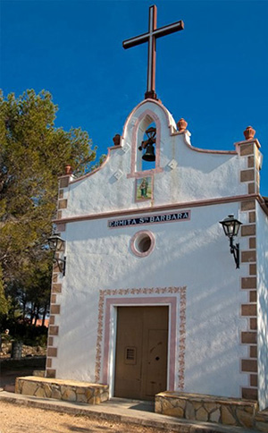

Su enclave en lo alto de la montaña, proporciona vistas sobre el amplio valle de la comarca, el Pico Caroig, las tierras del llano de Sumacárcer y los montes de la Ribera en la lejanía. Incluso en los días claros se puede divisar el horizonte del mar de la costa valenciana. Este paraje posee también una zona recreativa acondicionada con mesas y bancos de madera, fuentes, aseos y un restaurante, lo que le convierte en un lugar muy visitado por numerosas personas los fines de semana, en época estival y sobre todo en Pascua.